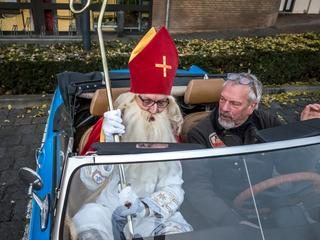
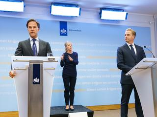
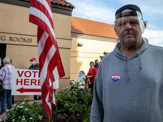
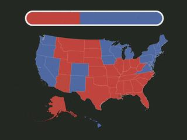

-
Test straten overvol door nieuwe op roep van overheid -
Justitie faalt opnieuw bij process Mohammed B. -
 Landelijke sinterklaasintocht zonder publiek en op geheime locatie -
 Stel hier je vragen over de strengere coronamaatregelen -
Ajax start alsnog met Onana en Tadic tegen Midtjylland, Klaassen op de bank"
Amerikaanse verkiezingen 2020
-
Strijd om Senaat is bijna net zo belangrijk als die tussen Trump en Biden -
 Biden of Trump? Dit betekent de verkiezingsuitslag voor het klimaat -
 Waarom Florida cruciaal is tijdens de Amerikaanse verkiezingen
Nieuwsvideo's